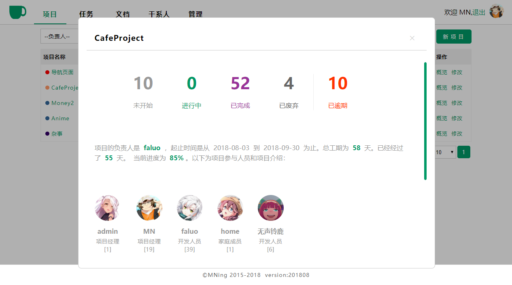
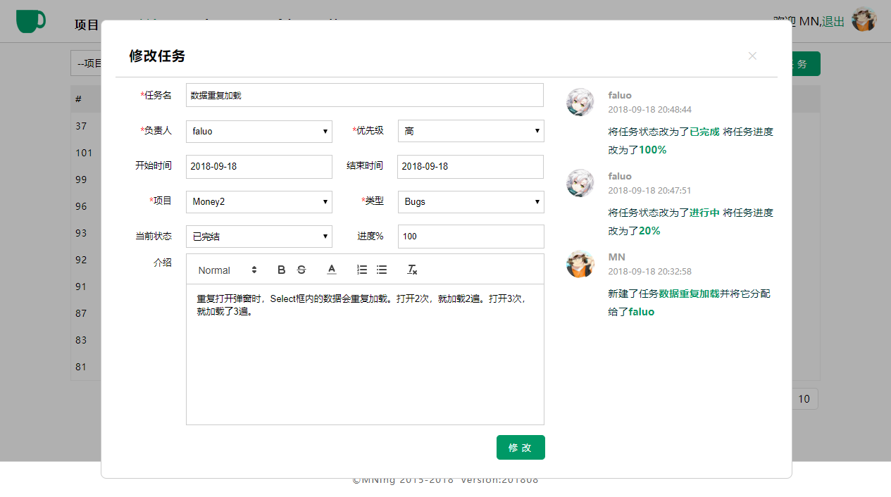
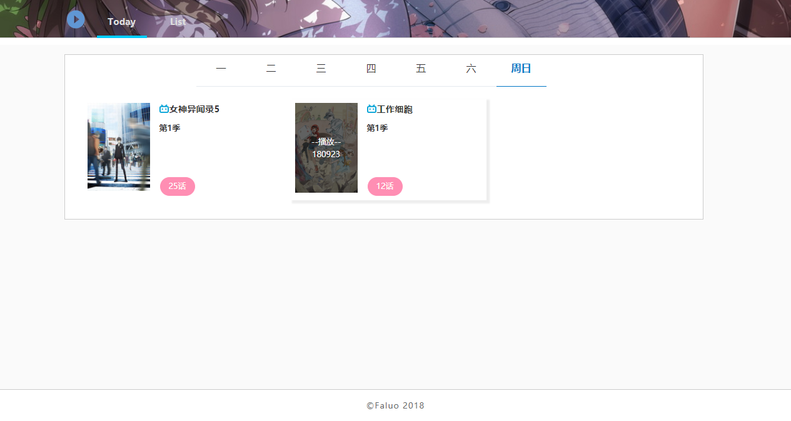
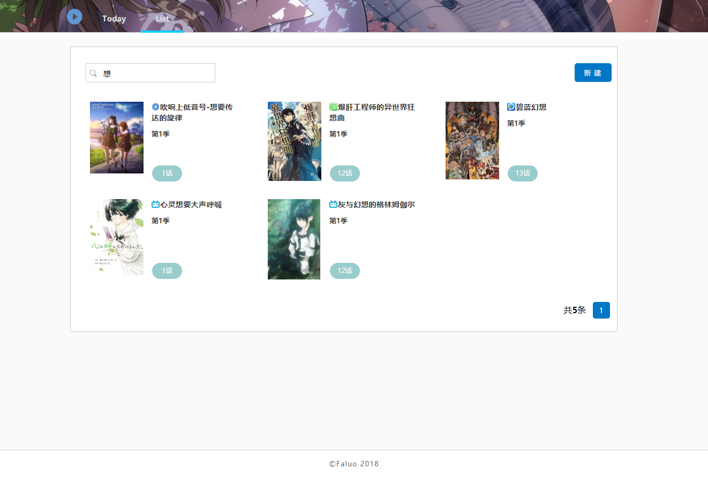
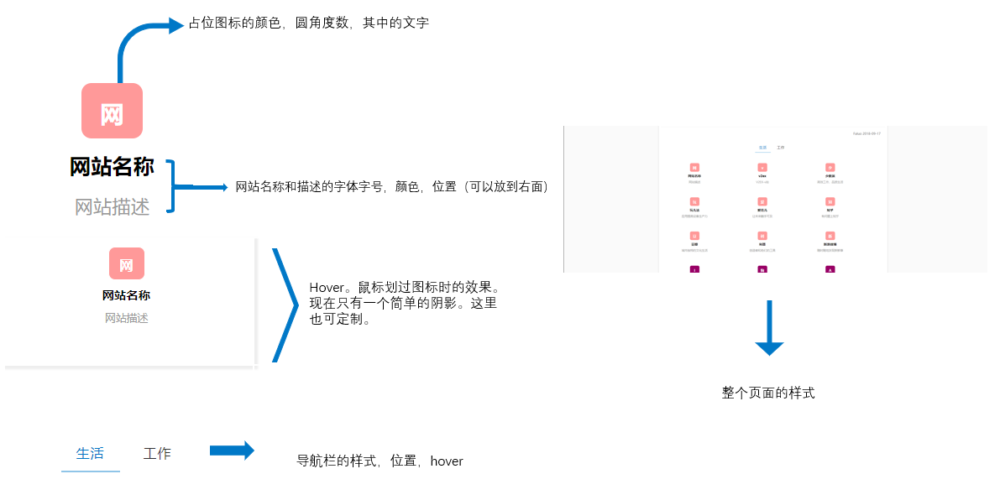

8月下旬到9月末，我自己还是做了不少事情的，稍微总结一下：
一、CafeProject步入正轨：
估计没谁会像我一样自己没事时造轮子，还煞有介事似的在本地充分用起来吧。弄得跟公司上线似的。然而我就是这样的人。就是喜欢力所能及范围内所有的工具都换成自己的。CafeProject做为我自己的项目管理工具，已经正式用了快2个月了。目前管理了我所有的个人工作，记录了我所有项目的基本情况和任务分布。

这一个多月完善了概览的界面（如图，这庞大的逾期数量），用jquery.nicescroll稍微修饰了一下滚动条。

在修改任务（修改项目的界面也一样）右侧加了日志。每次修改时都能看到以前谁改了什么东西，以防出错或者重复劳动。这个项目目前还有11条Bug和Feature,留在10月份完善。
二、新版的番组管理工具：
我还有一个番组管理工具。用来记录自己看过的动画、电影、小说或者玩过的游戏，同时还用来提醒每天该看的番剧有哪些。这个工具也迭代了好多版了，这个月对它的样式做了修改，变得比以前更简单了。我发现呢，我做的所有的软件都是这样的过程：第一版做好后觉得太简单了，得加功能；第二版功能特别全，特别复杂；第三版开始减功能，只把最常用的功能保留下来，其它的全删。目前的这款番组管理工具到了第三版啦，只保留了每日番组提醒和列表页面，同时只有最简单的按关键字搜索功能。


如果有谁喜欢这样简单的页面样式的话，可以联系我。
三、泛用型导航：
写了个导航。一来可以把自己常用的网址记一下，二来它可以不受终端的限制。目前只分为工作和生活两类，几乎涵盖了所有我个人常用的网站。在博客首页->工具栏目中就可以访问它了。希望它能不止方便到我一个人。您也可以通过邮件给我发送你喜欢的网站，我会把它加进来的。
另外，它是一个没有后台的纯前端页面。如果你也喜欢，或者想对它做一些有限的定制，可以联系我。可定制的内容如图。
